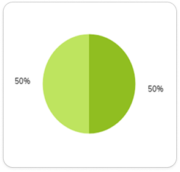
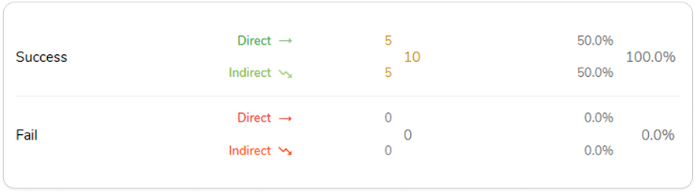

“Te das cuenta que para correr la carrera que elegiste y te gusta tienes que comprar el auto para participar. ¿A dónde irías para comprar el auto? ”
Estadísticas
Resumen del éxito en la tarea
 Ir a Pietree
Ir a Pietree
Éxito directo. El usuario fue directo a la respuesta correcta.
Éxito indirecto. El usuario tomó un camino diferente y se volvió antes de ir a la respuesta correcta.

Fallo directo. El usuario fue directo a una respuesta incorrecta.
Fallo indirecto. El usuario tomó un camino diferente y se volvió antes de ir a una respuesta incorrecta.




Pietree
Representación visual del trayecto del usuario
 Ir a Estadísticas
Ir a Estadísticas
El usuario fue por la dirección correcta.
El usuario fue por la dirección incorrecta.

El usuario interactuó con un nodo nuevamente (cerrado o abierto de nuevo). Un signo de duda.

El usuario se volvió. Un signo de que el usuario no encontró lo que buscaba.
El usuario nominó este nodo como respuesta correcta.
El usuario se saltó esta tarea en este nodo.